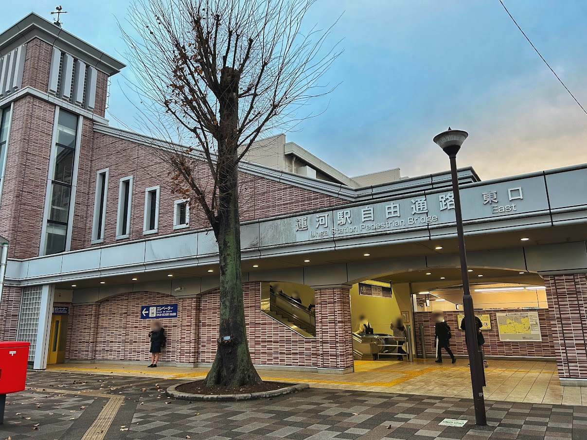
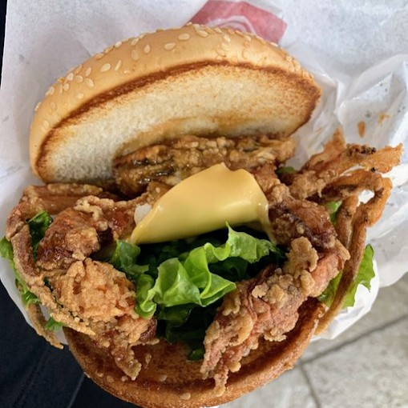
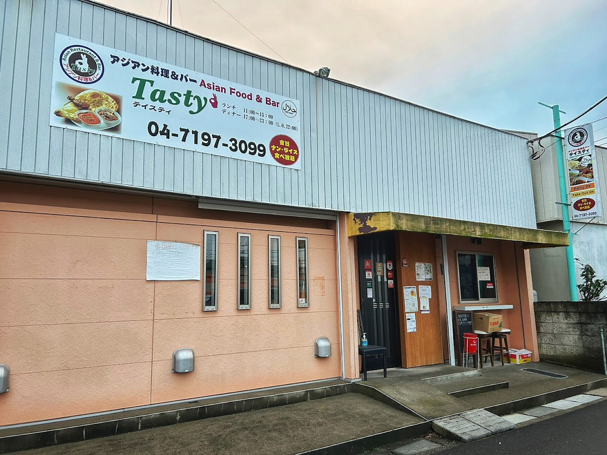

UNGA
千葉県流山市東深井にある、東武野田線の駅！
駅のすくそばを流れている利根運河が名前の由来です
江戸・明治時代は物資を江戸へ運ぶ交通手段として発達したそう。
TUS
東京理科大学の野田キャンパス。理工学部と薬学部があるよ！
光触媒国際研究センターや生命医科学研究所など、たくさんの研究施設がある！見学したい人はぜひ大学にアポとってね！！
KIRINGI
値段感 ¥1,000以内
おすすめメニュー 特製油そば(太麺) ¥800
人気No.1！！ 弾力のある太麺が特徴。チャーシュー、メンマ、鰹節に旨味の効いたタレが絡み合う至極の逸品！！
にんにく、酢、辛味を入れて味変するのも良し！
REIHANOHIKARI
お城、ドムドムバーガーなどレア物大量！ドムドムは国内に27店舗しかないらしい…。最初は入りにくいけどみんな多分いい人です！12時前後はお祈りがあるから注文できないよ！勧誘には気をつけてね！！

値段感 ¥1000以内
おすすめメニュー 手作り厚焼きたまごバーガー ¥370
SINKAROU
値段感 ¥1,000以内
おすすめメニュー レバニラ丼 ¥650、焼肉丼 ¥700
TASTY

あんまり辛くないけど汗が出ちゃう。5種類のルーが選べてナン食べ放題！バターチキンカレー、キーマカレー、マトンカレーがおすすめ！野菜カレーはあんま美味しくないよ。マンゴーラッシーが美味しい。
値段感 ¥1,000以内
おすすめメニュー バターチキンカレー、キーマカレー、マトンカレー
CONTACT
-
〒278-0022
千葉県野田市山崎2641e-Mail
7321175@ed.tus.ac.jp
7321196@ed.tus.ac.jp営業時間 9:00〜18:00（年中無休）
※都合により休業する場合がございます
-